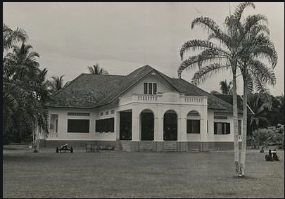
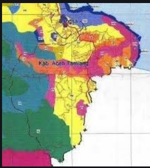

Aceh Tamiang

Baca Selengkapnya >>>>>
SEJARAH KERAJAAN BENUA TAMIANG
Seperti halnya dengan Peureulak demikian juga dengan Tamiang; artinya sampai saat ini belum terdapat kesamaan pendapat mengenai kapan masuk, berkembang dan tumbuhnya kekuatan politik Islam di sana.
....Baca Selengkapnya >>>>>

Baca Selengkapnya >>>>>
SEJARAH KESULTANAN BENUA TAMIANG
Kesultanan Benua Tamiang merupakan kerajaan Islam tertua di Aceh, Indonesia, setelah Kesultanan Perlak. Belum ditemukan data dan sumber yang pasti tentang kapan masuknya Islam, proses perkembangannya,
....Baca Selengkapnya >>>>>

SEJARAH KABUPATEN ACEH TAMIANG
Tamiang pada awalnya merupakan satu kerajaan yang pernah mencapai puncak kejayaan dibawah pimpinan seorang Raja Muda Setia yang memerintah selama tahun 1330 - 1366 M.
...Baca Selengkapnya >>>>>